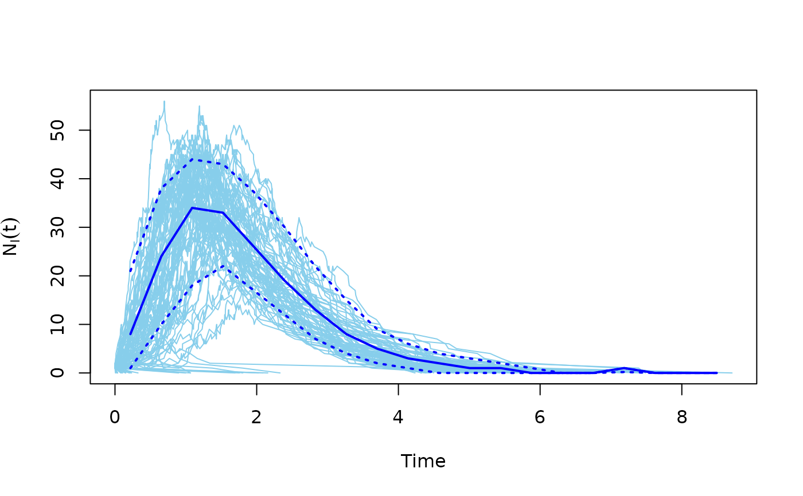

Run simulations for an SIR (susceptible-infected-recovered) model, on a graph
Arguments
- x
A
sirobject, returned by thesir()function.- middle
Logical scalar, whether to return the middle of the time bins, or the boundaries.
- na.rm
Logical scalar, whether to ignore
NAvalues.sirobjects do not contain anyNAvalues currently, so this argument is effectively ignored.- ...
Additional arguments, ignored currently.
- comp
Character scalar. The component to calculate the quantile of.
NIis infected agents,NSis susceptibles,NRstands for recovered.- prob
Numeric vector of probabilities, in [0,1], they specify the quantiles to calculate.
- graph
The graph to run the model on. If directed, then edge directions are ignored and a warning is given.
- beta
Non-negative scalar. The rate of infection of an individual that is susceptible and has a single infected neighbor. The infection rate of a susceptible individual with n infected neighbors is n times beta. Formally this is the rate parameter of an exponential distribution.
- gamma
Positive scalar. The rate of recovery of an infected individual. Formally, this is the rate parameter of an exponential distribution.
- no.sim
Integer scalar, the number simulation runs to perform.
Value
For sir() the results are returned in an object of class
‘sir’, which is a list, with one element for each simulation.
Each simulation is itself a list with the following elements. They are all
numeric vectors, with equal length:
- times
The times of the events.
- NS
The number of susceptibles in the population, over time.
- NI
The number of infected individuals in the population, over time.
- NR
The number of recovered individuals in the population, over time.
Function time_bins() returns a numeric vector, the middle or the
boundaries of the time bins, depending on the middle argument.
median returns a list of three named numeric vectors, NS,
NI and NR. The names within the vectors are created from the
time bins.
quantile returns the same vector as median (but only one, the
one requested) if only one quantile is requested. If multiple quantiles are
requested, then a list of these vectors is returned, one for each quantile.
Details
The SIR model is a simple model from epidemiology. The individuals of the population might be in three states: susceptible, infected and recovered. Recovered people are assumed to be immune to the disease. Susceptibles become infected with a rate that depends on their number of infected neighbors. Infected people become recovered with a constant rate.
The function sir() simulates the model. This function runs multiple
simulations, all starting with a single uniformly randomly chosen infected
individual. A simulation is stopped when no infected individuals are left.
Function time_bins() bins the simulation steps, using the
Freedman-Diaconis heuristics to determine the bin width.
Function median and quantile calculate the median and
quantiles of the results, respectively, in bins calculated with
time_bins().
References
Bailey, Norman T. J. (1975). The mathematical theory of infectious diseases and its applications (2nd ed.). London: Griffin.
See also
plot.sir() to conveniently plot the results
Processes on graphs
plot.sir()
Author
Gabor Csardi csardi.gabor@gmail.com. Eric Kolaczyk (http://math.bu.edu/people/kolaczyk/) wrote the initial version in R.
Examples
g <- sample_gnm(100, 100)
sm <- sir(g, beta = 5, gamma = 1)
plot(sm)
